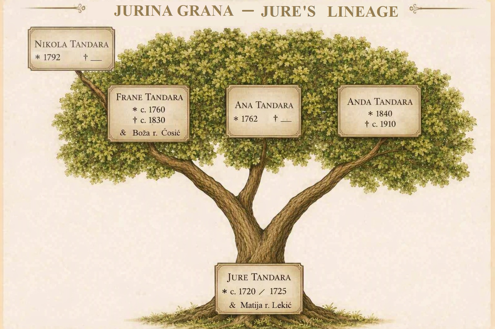

PRVA GRANA PRVE OBITELJI TANDARA
1.0. Jure Tandara – Ivanov (rođen oko 1725.)
1.0. Jure Tandara, rođen između 1720. i 1725., bio je najstariji sin
Ivana Tandarića koji je kasnije ustalio obiteljsko prezime Tandara.
Jure je oženio Matiju Lekić, s kojom je dobio sina
1.1. Franu i dvije kćeri,
Anđu i Anu.
1.1. Frane Jurin bio je oženjen s
Božom Ćosić i 1792. godine su dobili sina
Nikolu.
1.1.1. Nikola Franin bio je jedino dijete u braku
Frane i Bože Ćosić.
Nije poznato je li se ženio ni je li imao djece.
Kod popisa stanovništva u Ričicama iz 1806. godine nije zabilježen nijedan član Jurine obitelji. Ne zna se što je bilo s njegovom lozom. Pretpostavka je da su odselili, nakon čega im se izgubio svaki trag. Bilo bi zanimljivo da se netko od potomaka ove grane jednog dana javi i potvrdi pripadnost Jurinoj lozi.

Interaktivni dijagram Jurine grane
Otvorite pripadajući interaktivni rodoslovni dijagram ove obiteljske grane.
Napomena!
Kompletno rodoslovno stablo ove obiteljske grane nalazi se u desnom interaktivnom dijagramu na početnoj stranici Digitalnog arhiva roda Tandara.
Na početnoj stranici odaberite klikabilni okvir pod nazivom „Jurina grana”. Klikom na taj okvir otvara se odgovarajući dio rodoslovnog stabla s potomcima ove grane.